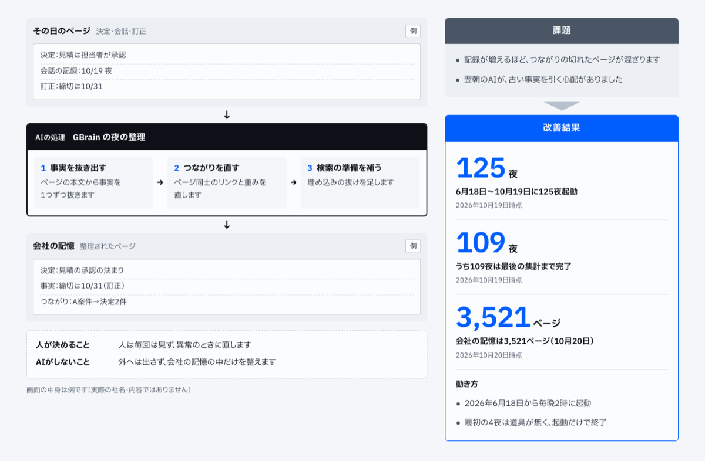
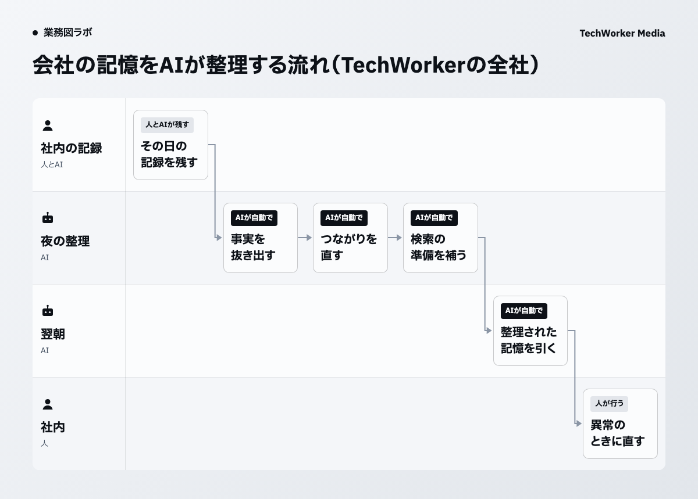

当社では、AIが毎晩2時に会社の記憶を整理しています
TechWorkerでは2026年6月18日から、AIが毎晩2時に社内の記録を整理しています。6月18日から10月19日までに125夜起動し、そのうち109夜は最後の集計まで完了しました。
社内のAIは会社の記憶を引いてから答えます。会社の記憶は社内の決定・会話・案件の記録をページにしてまとめた物です。2026年10月20日の時点で、3,521ページあります。

図の上は、AIが読む物です。その日のページで、決定・会話・訂正が入ります。図の下は、AIが届ける物です。整理された会社の記憶のページで、朝の報告や役割ごとのAIはこれを読んで動きます。
仕組みの全体は事例のページ「会社の記憶を、AIが毎晩2時に整理します」にまとめています。
記録が増えるほど、つながりの切れたページが混ざります
記録が増えるほど、古い事実や孤立したページも増えていきます。翌朝のAIが、古い事実を引く心配がありました。
夜の整理は、翌朝のAIが正しく引ける状態を保つために回しています。整理の対象はその日に増えたページです。
夜の整理でAIがする3つの作業
夜の整理では、AIが3つの作業を順に進めます。事実を抜き出す、つながりを直す、検索の準備を補う、の3つです。

1つ目はページの本文から事実を1つずつ抜く作業です。図の例では、「見積は担当者が承認」という決定が、見積の承認の決まりとして残ります。
2つ目はページ同士のリンクと重みを直す作業です。図の例では、A案件のページから2件の決定へつながりを張っています。
3つ目は検索に使う準備の抜け（埋め込み）を足す作業です。
人は毎回は見ず、異常のときに直します
人は毎回の整理を見ていません。異常のときに、人が直します。
AIがするのは、記憶を整えるところまでです。中身の正しさは人が直します。
整理の結果は外へ出しません。AIが整えるのは、会社の記憶の中だけです。
訂正も同じ流れで残ります。図の例では、締切を10月31日に直した訂正が、事実のページに「訂正」と書かれて残ります。
動き始めの4夜は、起動だけで終わりました
2026年6月18日から、毎晩2時に起動しています。最初の4夜は道具が無く、起動だけで終わりました。
6月18日から10月19日までの125夜のうち、最後の集計まで出たのは109夜です。
自社で試すときは、記録の置き場と直す人から決めます
自社で同じ形を試すなら、最初に記録をまとめる置き場と、異常のときに直す人を決めます。ここからは本記事の提案です。
置き場が1つに決まっていれば、AIが整える範囲もはっきりします。
直す人が決まっていれば、毎回の整理を人が見なくても回せます。止まった夜や、おかしな事実が見つかった夜に、誰が見るかを先に書いておきます。
業務図で、AIが整える所と人が直す所を分けます
会社の記録の整理は、AIが整える所と人が直す所を分けると、任せる範囲がはっきりします。業務図はその分け方を1枚で確かめる道具です。
ギョウムズAIは聞き取り・資料・業務の記録の3つから、AIが部署の業務図を作るサービスです。2週間の無料検証から始められます。
出典と、本記事で提案した範囲
- TechWorker社内の夜の整理の設定と記録（2026年10月20日時点）。公開資料ではありません。
- TechWorker「AIエージェントの事例」の事例のページ（2026年10月20日公開）。
整理の流れ、起動した夜の数、ページの数、人が直す所は、当社の設定と記録にある事実です。記録の置き場と直す人を先に決めることは、本記事の提案です。整理の正しさの割合と時間の削減は、本記事では扱いません。